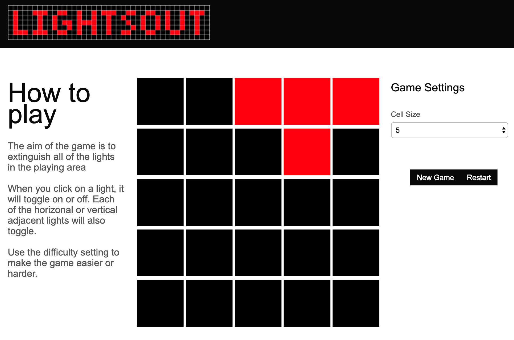

This morning I was trying to solve an issue where http://owenrumney.co.uk has an SSL error when trying to access my blog but https://www.owenrumney.co.uk is fine! (its still not resolved).
As I was poking around in my github account I looked at what I had done over the years… taking me back to 2012 when I originally opened my account.
The first project was an implementation of the LightsOut game written in NodeJS. Since I’ve never had a contract where I’ve been doing Node I can only assume i was writing this to learn Express/NodeJS etc.
The game is simple, click on the lights till they all go out, but when you click a cell, the state of the horizontal and vertical adjacent cells toggle their state.

Even a cursory look at the code has highlighted that it isn’t great, but my thoughts are more about how great it is to have Github and source control systems as a whole. Over the years, my laptops have been changed, flattened, stolen and lost, yet all I needed was a git clone git@github.com:owenrumney/Lightsout.git and I was able to run (confession, I also had to install node) my inagural GitHub contribution.
‘Int Git Brilliant!!!
(Another confession - it seems you just need to click the middle cell of the lights on start to win the game in a single click - so more work needed ;) )